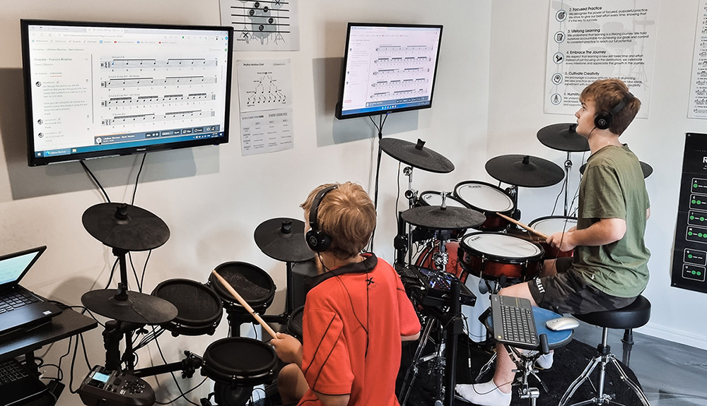

Darkshore

Melbourne, Australia
Dave D’Amore
Drummer. Session musician. Educator.
Acoustic drum recording for your next release.
Private lessons for your next breakthrough.

About Dave
I'm a Melbourne-based professional drummer with around 30 years of experience, performing everywhere from intimate venues to major festivals and recording studios. My musical roots lie in progressive rock, metal and alternative music, with influences spanning fusion, funk and jazz. I'm drawn to rhythmic complexity, but feel, dynamics and musicality always come first.
Read more
Beyond performing, I'm passionate about recording, production and the creative process. I also play and write music on guitar and bass, and have experience in recording and mixing, giving me a broader understanding of how instruments work together within a song. Whether developing drum parts from scratch or bringing an artist's existing ideas to life, I approach every project with the bigger musical picture in mind.
Education has also been a major part of my journey. I spent seven years running my own drum school in Cairns, teaching over 50 students alongside my work as a performing and recording musician. My teaching focuses on developing strong technique, coordination, rhythmic understanding and creativity, helping students build confidence, musical independence and their own voice behind the kit.
Let’s work togetherDrum lessons
One-on-one lessons in Campbellfield, Melbourne, for students aged 10 and above.
Whether you're a complete beginner or an experienced drummer, lessons are tailored to your ability, musical interests and goals.
30 years playing 7 years teaching 50+ students
-
Technique & Coordination
-
Rhythm, Timing & Groove
-
Creativity & Expression
-
Advanced Concepts & Theory


Session drumming
Acoustic drums for artists, bands and producers. Professionally recorded remotely, or performed in the studio.
From developing drum parts to recording the finished performance, I bring experience in songwriting, arrangement and production to create drum tracks that complement your music.
Rock · Metal · Progressive · Alternative · Pop · Indie & beyond
- Remote Multitrack Recording
- In-Studio Session Drumming
- Drum Parts & Arrangement
- Live Performances & Collaborations
Send a demo or backing track, tempo information and any reference tracks. Remote recordings are professionally tracked and edited, with multitrack WAV files ready for mixing.
Discuss a recordingSelected recordings
Darkshore
The Cost
Abi Muir
Stockholm
Abi Muir
Still The Same
Get in touch
Ask about lessons, tell me about a recording, or get in touch about session work. Share a few details and I’ll get back to you.
@drumswithdave on Instagram